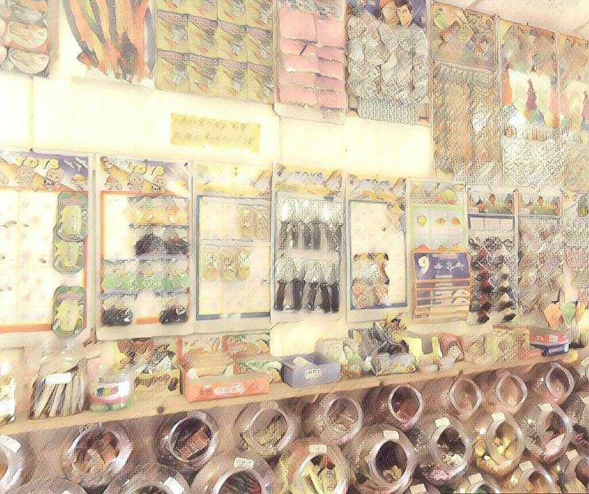

鬼節好時光

大家好，我是老闆「那個誰」，人生苦短，不如聽個「故事」解解悶？
「中國人怕鬼，西洋人也怕鬼，全世界的人都怕鬼。」
這句話大概只有197X-8X年代的你知道，司馬中原如此偉大，照亮了每個無聊卻又想要有人陪的晚上。
你也想有人陪，來，我教你，如果一個人空虛、寂寞覺得冷，在那四台還未風行、手機尚未具有智慧的美好時代，翻開司馬伯伯的小冊子，轉開司馬伯伯的頻道，你馬上就會覺得家裡到處都是人（？），好不熱鬧。
農曆七月俗稱鬼月，鬼門開開的特殊假期，也是鬼故事最得意的時段，不論在荒廢的樂園、醫院太平間、各種生死現場或陰陽交界、渾沌不明的時刻，七月時都成為觀光勝地，飄出種種鬼影。
真看見鬼的閃躲，看不見的好奇，就像天橋底下等說書的諸位客倌，來來來，膽大的坐前排，害怕的坐後排。
但追根究柢，鬼故事吸引人在哪？
未知與期望。
未知帶來恐懼、新奇、刺激，反正在你上班族生涯裡面沒有的，它都有，重點是這刺激不在千里之外，就在等等會經過的隧道、廁所或是後面的那個鏡子。遊蕩在真假之間的鬼聲鬼語中，彷彿參加了一場盛大的變裝派對，而你穿梭其間好不快活（？）。
你或許會說未知很好理解，但怕鬼都來不及了，怎麼會期望呢？
期望來自鬼是人逝去後，得以延續存在的一種狀態，是對人死燈滅論者發起的一場遊行抗爭，是對享受當下而不負責任的一聲警戒，是對逝去之愛繼續傳達的一個通道，是前世今生的一份聯繫，是寂寞孤獨的一種安慰與陪伴，我們都期望著鬼對生命帶來的一種持續性，不論正面還是負面。
「你走了還回不回來？」
或許是所有鬼故事中最重要的問句，當中交雜了多少恐懼、悲傷、喜悅與憤怒，都在未知與期望中此消彼長，置身（鬼）故事中怎能不羨煞旁人。
七月正是個體驗的好時節，你說你只想坐後排？沒問題，我們的七月半系列，包你看了不怕，不怕再看，明瞭人鬼情味，賺你一滴淚、一陣笑、一哆嗦足已。
咦？你的心好像也藏不少鬼，交給我，我來告訴你祂的故事。